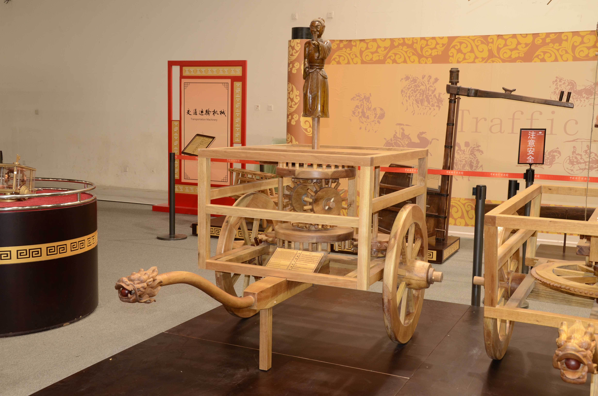
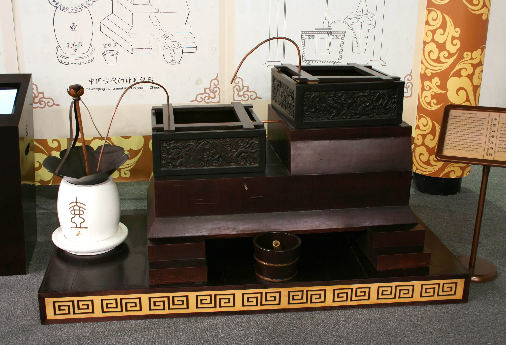
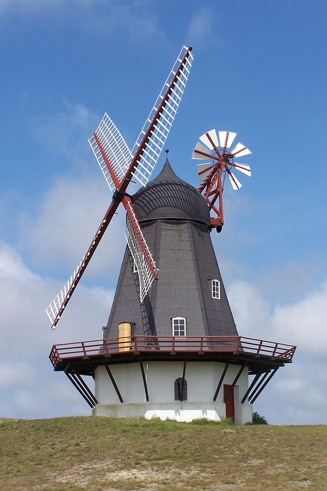
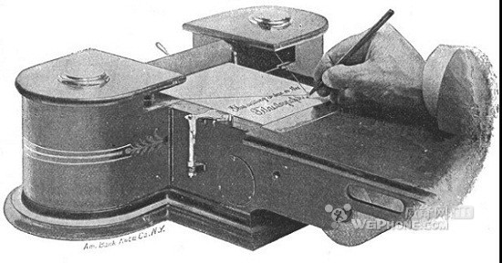

自动控制的基本概念
Table of Contents
1 自动控制历史
1.1 Centrifugal governor

1.2 指南车

1.3 莲花漏

1.4 Windmil fantail

1.5 telautograph

1.6 控制理论的发展
*<1> Pierre-Simon Laplace (1749-1827) invented the Z-transform in his work on probability theory, now used to solve discrete-time control theory problems. The Z-transform is a discrete-time equivalent of the Laplace transform which is named after him. *<1> Joseph Fourier (21 March 1768 – 16 May 1830) was a French mathematician and physicist born in Auxerre and best known for initiating the investigation of Fourier series and their applications to problems of heat transfer and vibrations. The Fourier transform and Fourier's Law are also named in his honour. Fourier is also generally credited with the discovery of the greenhouse effect. *<1> Alexander Lyapunov (1857–1918) in the 1890s marks the beginning of stability theory. *<2> Harold S. Black (1898–1983), invented the concept of negative feedback amplifiers in 1927. He managed to develop stable negative feedback amplifiers in the 1930s. *<2> Harry Nyquist (1889–1976), developed the Nyquist stability criterion for feedback systems in the 1930s. *<2> Norbert Wiener (1894–1964) co-developed the Wiener–Kolmogorov filter and coined the term cybernetics in the 1940s. *<3> Hendrik Wade Bode (pronounced Boh-dee in English, Boh-dah in Dutch),(24 December 1905 – 21 June 1982) was an American engineer, researcher, inventor, author and scientist, of Dutch ancestry. He made important contributions to control system theory and mathematical tools for the analysis of stability of linear systems, inventing Bode plots, gain margin and phase margin. *<3> John R. Ragazzini (1912–1988) introduced digital control and the use of Z-transform in control theory (invented by Laplace) in the 1950s.
2 自动控制理论
2.1 什么是自动控制
无人工直接参与的情况下，利用控制装置(控制器)使被控对象按照给定的规律变化。
2.2 自动控制理论
- <2->经典控制理论
- <3->现代控制理论
2.3 课程内容：
- <2->一般概念
- <3->数学模型
- <4->分析方法
- 时域分析法
- 根轨迹法
- 频域分析法
- <5->设计方法
- <6->离散系统分析
- <7->典型非线性系统的分析